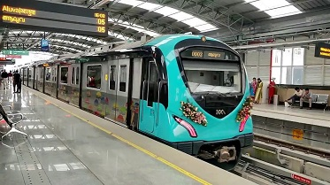

Ernakulam refers to the central, mainland portion of the city of Kochi in central Kerala, India and has lent its name to the Ernakulam district.[1] The Kerala High Court, the office of the Kochi Municipal Corporation and the Cochin Stock Exchange are situated here. The Ernakulam Junction is a major railway station of the Indian Railways. The Cochin Port, DP World Kochi and Cochin Shipyard have resulted in the faster growth of the city. The technology park InfoPark, Kochi and SmartCity, Kochi is on the outskirts of the city. Tourism has also contributed heavily to the economy of Ernakulam. The city with its temples, old churches and its culture, is ranked first in the number of domestic tourists visiting. Vypin or Vypeen is one of a group of islands that form part of the city of Kochi, in the southwestern Indian state of Kerala. some important destinations listed:
Paradise flycatcher in Managalavanam sanctuary
Kochi Metro